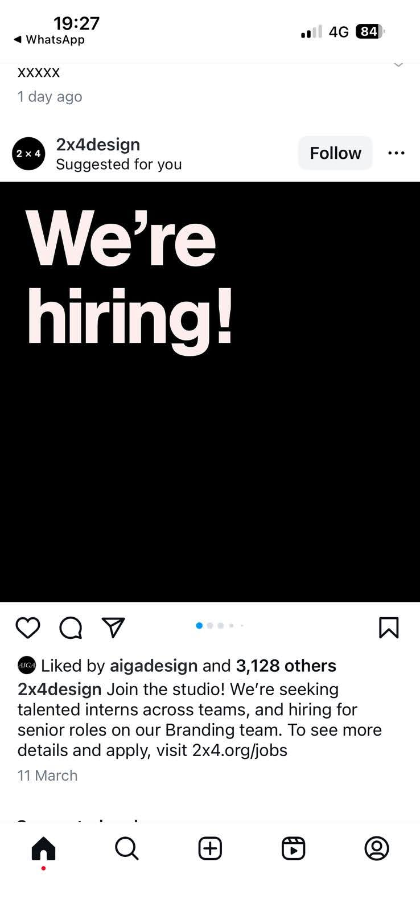

Snapshot & assessment for Maia
Roles identified: Branding Internship, Environments Internship, Strategy Internship.
This is still one of the strongest studio references in the whole batch because it combines real studio credibility, paid internships, in-person work, and direct design / strategy exposure. But the specific Summer 2026 opening window described on the official pages now looks passed.
Best fit: Environments first, Branding second, Strategy third.
Why it fits: on-site, paid, short-term, and clearly connected to serious studio exposure.
Main challenge: this is New York-based and the official pages cite April start dates / an April 3 submission window, so it should not be treated as currently open without a fresh manual check.
Recommended action: keep as a high-quality reference and re-check future 2x4 internship cycles rather than treat this captured round as application-ready now.
Company mini-profile
2x4 appears to be a well-established multidisciplinary design studio with distinct Branding, Environments, and Strategy teams. The studio environment looks serious, structured, and closer to the kind of place that could materially strengthen Maia’s design thinking and network.
The key correction is timing, not legitimacy: the jobs are real and officially documented, but the captured Summer 2026 cycle appears date-bound rather than evergreen.
Source links
Role details
Environments Internship
- Fit: strongest match
- Focus: graphic design, architecture, experience design, studio projects
- Mode: In-person
- Location: New York City
- Duration: 12 weeks
- Pay: $800/week stipend
Branding Internship
- Fit: very strong secondary match
- Focus: design production, presentations, mock-ups, cross-disciplinary work
- Mode: In-person
- Location: New York City
- Duration: 12 weeks; official page cites April 1 or April 15 start
- Pay: $800/week stipend
Strategy Internship
- Fit: relevant but less direct
- Focus: research, insights, writing, creative concepts
- Mode: In-person
- Location: New York City
- Duration: 12 weeks
- Pay: $800/week stipend
- Deadline: rolling, requested by April 3 on the official page
Reputation and external signals
Positive signals: structured official jobs pages, paid internships, distinct teams, professional application process, clear in-person studio requirement.
Current truth: this is a strong reference and a real target studio, but not a safely current opportunity unless a newer cycle is found.
Still to research if Maia gets serious in a future cycle: external employee or intern commentary, competitiveness, and culture signals beyond the official site.